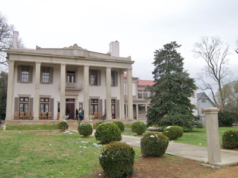
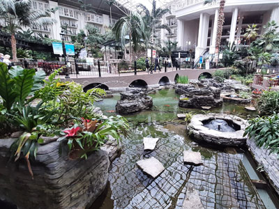
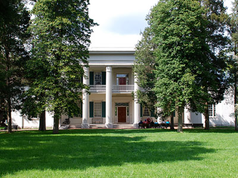
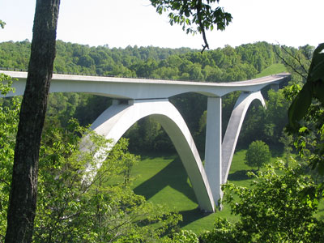

Nashville Travel Guide
Capital of the U.S. state of Tennessee. Legendary country music venues include the Grand Ole Opry House, home of the famous “Grand Ole Opry” stage and radio show. The Country Music Hall of Fame and Museum and historic Ryman Auditorium are Downtown, as is the District, featuring honky-tonks with live music and the Johnny Cash Museum, celebrating the singer's life
Top Locations
-400.jpg)


Places to See in Nashville
Assembly Food Hall
Multi-level dining and entertainment venue featuring dozens of food vendors, bars, live music stages, rooftop gathering spaces, and local culinary experiences.

Nick Amoscato, CC BY 2.0, via Wikimedia Commons; Image Size Adjusted
.jpg){kind=link}
Belle Meade Plantation
Historic estate featuring a Greek Revival mansion, preserved farm buildings, equestrian exhibits, and interpretive tours that explore thoroughbred horse breeding, Southern history, and the experiences of enslaved and free workers who lived and worked there.
Belmont Mansion
Historic mansion built by Joseph and Adelicia Acklen to serve as the center of their 180-acre summer estate in what was then country outside the city, and featured elaborate gardens and a zoo

Broadway Entertainment District / Honky Tonk Highway
Historic entertainment district filled with live music venues, bars, restaurants, and performance stages showcasing country music and related genres throughout the day and night.
Joshua Ness theexplorerdad, CC0, via Wikimedia Commons; Image Size Adjusted
.jpg){kind=link}
Cheekwood Botanical Garden and Museum
55-acre historic estate on the western edge of Nashville, Tennessee that houses the Cheekwood Estate & Gardens which includes a 30,000-square-foot Georgian-style mansion opened as a botanical garden and art museum
edwardhblake, CC BY 2.0, via Wikimedia Commons; Image Size Adjusted

Country Music Hall of Fame and Museum
Museum is one of the world's largest and most active popular music research centers and the world's largest repository of country music artifacts
Fifth and Broadway
Mixed-use entertainment district featuring retail shopping, chef-driven restaurants, live music venues, cultural attractions, and a large food hall in the heart of downtown Nashville.
Frist Art Museum
Art deco exhibition center featuring rotating visual art displays, interactive family activities, and educational programs in a historic setting.

Fritzmann2002, CC BY-SA 4.0, via Wikimedia Commons; Image Size Adjusted

Gaylord Opryland Resort and Convention Center
Hotel and convention center with 2,888 rooms is one of the 30 largest hotels in the world
Ken Lund from Las Vegas, Nevada, USA, CC BY-SA 2.0, via Wikimedia Commons; Image Size Adjusted
.jpg){kind=link}
Grand Ole Opry
Weekly American country music stage concert showcasing a mix of famous singers and contemporary chart-toppers performing country, bluegrass, Americana, folk, and gospel music as well as comedic performances and skits
The Gulch
Neighborhood on the south fringe of downtown Nashville is known to be a trendy and hip neighborhood, and a popular destination for locals, college students, and visitors

Nashpaul, CC BY-SA 3.0, via Wikimedia Commons; Image Size Adjusted

Hermitage
Historical museum and 1,000+ acre site was owned by Andrew Jackson, the seventh president of the United States
John Seigenthaler Pedestrian Bridge
Truss bridge that spans the Cumberland River is one of the longest pedestrian bridges in the world
Michael Rivera, CC BY-SA 4.0, via Wikimedia Commons; Image Size Adjusted

Johnny Cash Museum
Museum housing the world's largest collection of Johnny Cash memorabilia and artifacts
Lane Motor Museum
Collection of rare and unique automobiles and motorcycles with a focus on European models, engineering innovation, and historical significance.
Musicians Hall of Fame and Museum
Interactive museum honoring musicians and studio players across all genres with exhibits featuring iconic instruments, recording gear, and the GRAMMY Gallery experience.

Author:Brent Moore, CC BY 2.0, via Wikimedia Commons; Image Size Adjusted

Natchez Trace parkway Bridge
Concrete double arch bridge is the first segmentally constructed concrete arch bridge in the United States
National Museum of African American Music
Immersive cultural institution showcasing the history and impact of African American music traditions through interactive exhibits and multimedia experiences.
The Parthenon
Full-scale replica of the original Parthenon in Athens, and built in 1897 as part of the Tennessee Centennial Exposition, and now functions as an art museum
Percy Warner Park
Two combined parks serving as the second largest municipal park in the state, offering a variety of activities, including hiking trails, cross country courses, and an equestrian center
Prince's Hot Chicken Shack
Restaurant known for its hot chicken, and is credited with popularizing the dish and inspiring restaurants with similar offerings
Radnor Lake State Natural Area
Popular state natural area and state park just outside Nashville includes five miles of unpaved trails wandering through the woods surrounding the lake
Ryman Auditorium
2,362-seat live-performance venue designated a National Historic Landmark for its pivotal role in the popularization of country music
Tennessee Agricultural Museum
Two-level museum featuring historic cabins, heirloom gardens, and thousands of artifacts that illustrate rural life and farming practices before electricity.
Tennessee State Capitol
Capitol serving as home of the Tennessee General Assembly and the location of the governor's office is one of Nashville's most prominent examples of Greek Revival architecture
Tennessee State Museum
Expansive museum chronicling Tennessee’s history through permanent and rotating exhibits featuring artifacts, art, and interactive displays from prehistoric times to the present.
Twelve South
Walkable commercial district featuring boutique shops, local restaurants, coffeehouses, murals, green spaces, and independently owned businesses.
Overview
Nashville is the capital and most populous city of Tennessee, world-famous as "Music City" and the home of country music. Located on the Cumberland River in Middle Tennessee, it has about 700,000 residents in the city and more than two million in the metropolitan area, one of the fastest-growing regions in the Southeast. Nashville is a center of the music industry, health care, higher education and publishing, and it is known for its songwriters, recording studios, honky-tonks, hot chicken and Southern hospitality. Its nickname "the Athens of the South" comes from its universities and the full-size Parthenon replica in Centennial Park.
Visitors come to hear live music every night of the week, tour the Country Music Hall of Fame and Museum and the Ryman Auditorium, bar-hop on Lower Broadway, eat hot chicken and barbecue, and explore historic homes, museums and parks. The city is also a popular destination for bachelorette parties, weekend getaways, festivals and conventions, and it has become a major sports and tech hub. Its walkable downtown, lively neighborhoods such as the Gulch, East Nashville and 12 South and friendly locals make it easy to enjoy.
Nashville was founded in 1779 as Fort Nashborough by James Robertson and a party of settlers on the bluffs of the Cumberland River, and was named for Revolutionary War general Francis Nash. It became a river port and trading center, was designated Tennessee's permanent capital in 1843, and the Tennessee State Capitol was completed in 1859. Union forces occupied the city for most of the Civil War, and the 1864 Battle of Nashville was one of the war's last major battles. After the war, Fisk University, founded in 1866, became a center of Black education and its Fisk Jubilee Singers introduced spirituals to the world. The 1897 Tennessee Centennial Exposition produced the Parthenon, and in 1925 the radio show that became the Grand Ole Opry began, setting Nashville on its path to becoming Music City. In 1963 the city and Davidson County merged into a metropolitan government, and Nashville was a key site of the Civil Rights Movement, including the 1960 lunch counter sit-ins.
Nashville's identity is inseparable from country music, though the city is also home to bluegrass, gospel, Americana, rock, pop, blues and Black music traditions. The Grand Ole Opry, the world's longest-running live radio show, broadcasts from the Opry House in Music Valley, with a winter run at the historic Ryman Auditorium, the "Mother Church of Country Music." Music Row is home to record labels, publishers and legendary recording studios such as RCA Studio B, where the "Nashville Sound" took shape in the 1950s and 1960s. Songwriters perform their own songs at the Bluebird Cafe and other listening rooms, and the Station Inn is a bluegrass institution. Visitors can learn more at the Country Music Hall of Fame, the Johnny Cash Museum, the Musicians Hall of Fame and the National Museum of African American Music. Major events include CMA Fest in June, the CMA Awards in November and AmericanaFest in September.
Lower Broadway, known as Honky Tonk Highway, is the neon-lit heart of Nashville nightlife. Its long row of bars, including Tootsie's Orchid Lounge, Robert's Western World, The Stage, Layla's and Legends Corner, offer free live music from late morning to the early hours, with different bands playing on multiple floors. Dozens of venues, boot shops and restaurants line the blocks between the Cumberland River and the Ryman, and the Fifth + Broadway complex adds more dining and shopping and the National Museum of African American Music, next to Bridgestone Arena. Broadway is lively and crowded, especially on weekends, so go early in the day to enjoy a quieter experience, and expect the streets to be busy at night. Second Avenue and Printer's Alley, home to historic nightclubs, extend the party.
Top attractions include the Grand Ole Opry and Gaylord Opryland Resort, a huge resort with indoor gardens and a river; the Parthenon, with its 42-foot statue of Athena; the Tennessee State Capitol; the John Seigenthaler Pedestrian Bridge with skyline views; the Gulch and its famous angel-wings mural; and 12 South, known for its shops and murals. History fans can visit The Hermitage, the home of President Andrew Jackson, antebellum homes such as Belle Meade Plantation and Belmont Mansion, and sites tied to the Battle of Nashville. The Natchez Trace Parkway Bridge near Franklin is a scenic stop on the Natchez Trace Parkway.
Nashville has an excellent mix of music, art and history museums. The Frist Art Museum is housed in a restored Art Deco post office and hosts traveling exhibitions, and Cheekwood Botanical Garden and Museum of Art combines an art collection with a hilltop estate and gardens. The Tennessee State Museum tells the state's history and is free to enter, the Tennessee Agricultural Museum shows rural life, and the Lane Motor Museum displays one of the largest collections of European cars in the country. Performing arts thrive too, with the Tennessee Performing Arts Center (home of the Nashville Opera, Nashville Ballet and Nashville Repertory Theatre), the Nashville Symphony at the Schermerhorn Symphony Center and the Nashville Public Library.
Despite its urban buzz, Nashville has lots of green space. Downtown's Centennial Park, home of the Parthenon, has a lake and walking paths, and Bicentennial Capitol Mall State Park shows off Tennessee's history and geography. The Warner Parks, Percy Warner Park and Edwin Warner Park, cover about 3,100 acres of forest and ridgelines with hiking, biking and horseback trails, and Radnor Lake State Park is a wildlife refuge and natural area known for its birdwatching and quiet trails. Shelby Bottoms Greenway follows the Cumberland River, and Cheekwood offers formal gardens and sculpture trails. The Natchez Trace Parkway, a National Park Service scenic road, begins just southwest of the city.
Nashville is famous for hot chicken, fried chicken coated in a fiery cayenne paste and served on white bread with pickles, which was invented here and is served at its original home, Prince's Hot Chicken Shack, as well as Hattie B's and Bolton's. Other local favorites include "meat-and-three" Southern plates (at Arnold's Country Kitchen, a James Beard America's Classic), barbecue, biscuits and country ham, banana pudding and the Goo Goo Cluster, an early combination candy bar first made here in 1912. The city also has a rapidly growing restaurant scene, led by chefs such as Sean Brock at Husk, with farm-to-table cooking, craft cocktails, whiskey and bourbon, and a thriving craft-beer scene. Nashville is home to the largest Kurdish community in the United States, and Kurdish, Mexican, Ethiopian, Vietnamese and other international restaurants thrive. The Assembly Food Hall brings together many vendors in one place.
Nashville has a growing professional sports scene. The Tennessee Titans (NFL), who moved from Houston in 1997, play at Nissan Stadium along the Cumberland River, and a new stadium is planned for the 2027 season. The Nashville Predators (NHL), who reached the Stanley Cup Final in 2017, play at Bridgestone Arena downtown. Nashville SC (MLS), which began play in 2020, plays at Geodis Park, the largest soccer-specific stadium in the United States. The Nashville Sounds (Triple-A baseball) play at First Horizon Park. College sports are led by the Vanderbilt Commodores of the Southeastern Conference, and Nashville hosts the Music City Bowl and NASCAR racing at Nashville Superspeedway and Fairgrounds Speedway.
Sources: This article uses material from the Wikipedia articles "Nashville, Tennessee" and "History of Nashville, Tennessee", which are released under the Creative Commons Attribution-Share-Alike License 3.0. Additional information from Nashville Convention & Visitors Corp (Visit Music City), the Grand Ole Opry, the Country Music Hall of Fame and Museum, the National Park Service: Natchez Trace Parkway, the Tennessee State Parks, the National Weather Service Nashville, the Metropolitan Government of Nashville and Davidson County and the official websites of the attractions, museums and teams mentioned.